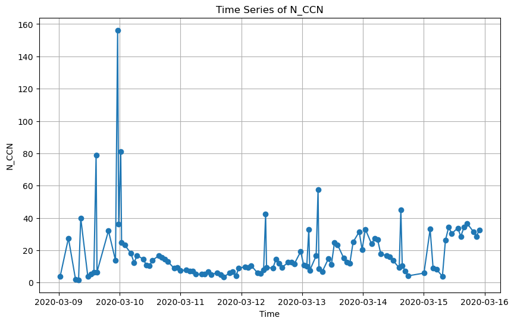
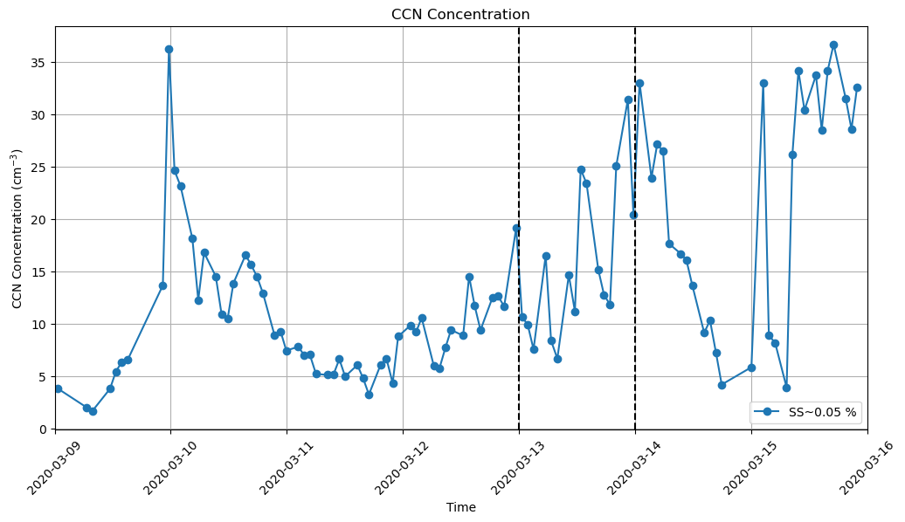
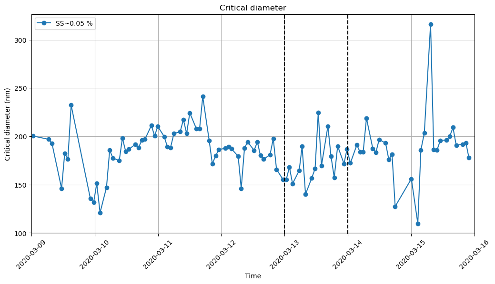
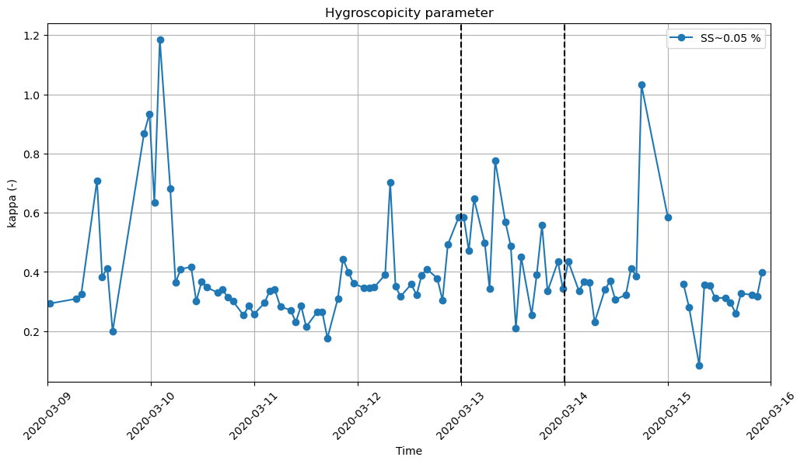
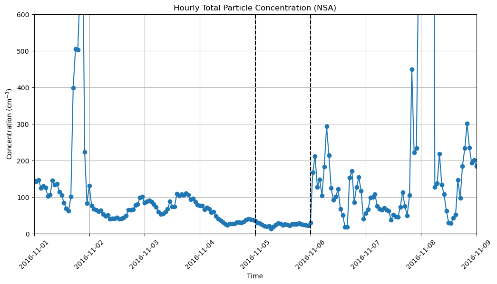

import act
from datetime import datetime
import matplotlib.pyplot as plt
import netCDF4 as nc
import numpy as np
from netCDF4 import Dataset
import pandas as pd
import xarray as xr
# Set your username and token here!
# Read more on how to retrive your token:
# https://arm-doe.github.io/ACT/API/generated/act.discovery.download_arm_data.html#act.discovery.download_arm_data
username = ''
token = ''
datastream = "anxaosccnsmpskappaM1.c1"
target_variable='N_CCN'
# Read NetCDF files
from datetime import datetime
startdate = '2020-03-09'
enddate = '2020-03-16'
files = act.discovery.download_arm_data(username, token, datastream, startdate, enddate)
ds = act.io.read_arm_netcdf(files)
[DOWNLOADING] anxaosccnsmpskappaM1.c1.20200310.002602.nc
[DOWNLOADING] anxaosccnsmpskappaM1.c1.20200309.003204.nc
[DOWNLOADING] anxaosccnsmpskappaM1.c1.20200313.003849.nc
[DOWNLOADING] anxaosccnsmpskappaM1.c1.20200311.022138.nc
[DOWNLOADING] anxaosccnsmpskappaM1.c1.20200312.013206.nc
[DOWNLOADING] anxaosccnsmpskappaM1.c1.20200315.000427.nc
[DOWNLOADING] anxaosccnsmpskappaM1.c1.20200314.005637.nc
If you use these data to prepare a publication, please cite:
Kulkarni, G., Levin, M., & Shilling, J. CCN Counter derived hygroscopicity
parameter kappa (AOSCCNSMPSKAPPA). Atmospheric Radiation Measurement (ARM) User
Facility. https://doi.org/10.5439/1729907
ERROR 1: PROJ: proj_create_from_database: Open of /opt/conda/share/proj failed
supersaturation_calculated = ds['supersaturation_calculated'].values
print(supersaturation_calculated)
[0.03772254 0.9527876 0.03713164 0.03777312 0.94265825 0.0361128
0.03590171 0.03865974 0.9207752 0.03613326 0.93762916 0.03730469
0.9415967 0.03776084 0.9488468 0.03797971 0.03802646 0.03895507
0.03673649 0.03726097 0.0406676 0.03826233 0.03813892 0.04080067
0.03805974 0.04057948 0.03703631 0.04065845 0.03812022 0.0408215
0.03800975 0.03791384 0.04085224 0.04068534 0.03789597 0.04061534
0.04012176 0.03699951 0.03873016 0.03839283 0.03811702 0.03866894
0.0388497 0.03886029 0.036304 0.03663572 0.03961685 0.03700327
0.03994245 0.03995067 0.03732248 0.03755617 0.95262843 0.03858808
0.03908711 0.03649596 0.03973068 0.04004772 0.04068363 0.03781965
0.03791812 0.03996408 0.03892046 0.03848799 0.9573314 0.0359726
0.03940228 0.9628967 0.03662299 0.03983196 0.03893958 0.03759156
0.04076935 0.04187626 0.03838104 0.04019907 0.04114968 0.03964654
0.0420416 0.04223079 0.0405227 0.03694268 0.03942828 0.0393893
0.03839598 0.04250516 0.03967811 0.03885743 0.03858862 0.7361764
0.0396138 0.03761499 0.0369612 0.03763521 0.04067905 0.03802288
0.03784302 0.04046036 0.03809318 0.04056835 0.03773213 0.0374909
0.03760191 0.03809468 0.04106574 0.04089193 0.04110853 0.04106598]
# Apply quality control where qc_N_CCN > 0
ds_filtered = ds.where(ds['qc_N_CCN'] == 0)
#ds_filtered.clean.cleanup() #No qc in that time period
#ds_filtered = act.qc.arm.add_dqr_to_qc(ds_filtered)
#ds_filtered.qcfilter.datafilter(rm_assessments=['Bad'], del_qc_var=False)
supersaturation_calculated = ds_filtered['supersaturation_calculated']
supersaturation_calculated.values
plt.plot(ds_filtered['supersaturation_calculated'].values, ds_filtered['supersaturation_calculated'].values, marker='o', linestyle='-')
[<matplotlib.lines.Line2D at 0x7f2a1e31e7d0>]
plt.figure(figsize=(10, 6))
plt.plot(ds_filtered['time'].values, ds_filtered['N_CCN'].values, marker='o', linestyle='-')
plt.xlabel('Time')
plt.ylabel('N_CCN')
plt.title('Time Series of N_CCN')
plt.grid(True)
plt.show()

ds_filtered
<xarray.Dataset> Size: 471kB
Dimensions: (time: 108, bound: 2,
diameter_mobility: 192, droplet_size: 20,
setpoint: 7)
Coordinates:
* time (time) datetime64[ns] 864B 2020-03-09T00...
* diameter_mobility (diameter_mobility) float32 768B 1.02 .....
* droplet_size (droplet_size) float32 80B 0.0 1.0 ... 19.0
* setpoint (setpoint) float32 28B 0.0 0.1 ... 0.8 1.0
Dimensions without coordinates: bound
Data variables: (12/22)
base_time (time) datetime64[ns] 864B dask.array<chunksize=(14,), meta=np.ndarray>
time_offset (time) datetime64[ns] 864B dask.array<chunksize=(14,), meta=np.ndarray>
time_bounds (time, bound) object 2kB dask.array<chunksize=(14, 2), meta=np.ndarray>
diameter_mobility_bounds (time, diameter_mobility, bound) float32 166kB dask.array<chunksize=(14, 192, 2), meta=np.ndarray>
droplet_size_bounds (time, droplet_size, bound) float32 17kB dask.array<chunksize=(14, 20, 2), meta=np.ndarray>
kappa (time) float32 432B dask.array<chunksize=(14,), meta=np.ndarray>
... ...
qc_N_CCN_dN (time, droplet_size) float64 17kB dask.array<chunksize=(14, 20), meta=np.ndarray>
dN_dlogDp (time, diameter_mobility) float32 83kB dask.array<chunksize=(14, 192), meta=np.ndarray>
qc_dN_dlogDp (time, diameter_mobility) float64 166kB dask.array<chunksize=(14, 192), meta=np.ndarray>
lat (time) float32 432B dask.array<chunksize=(14,), meta=np.ndarray>
lon (time) float32 432B dask.array<chunksize=(14,), meta=np.ndarray>
alt (time) float32 432B dask.array<chunksize=(14,), meta=np.ndarray>
Attributes: (12/17)
command_line: aosccnsmpskappa -n aosccnsmpskappa -s anx -f M1 -b...
Conventions: ARM-1.3
process_version: aosccnsmpskappa-1.2.0
dod_version: aosccnsmpskappa-c1-1.2
input_datastreams: anxaosccn2colaavgM1.b1 : 2.1 : 20200309.003204\nan...
site_id: anx
... ...
doi: 10.5439/1729907
history: created by user levin on machine prod-proc5.adc.ar...
_file_dates: ['20200309', '20200310', '20200311', '20200312', '...
_file_times: ['003204', '002602', '022138', '013206', '003849',...
_datastream: anxaosccnsmpskappaM1.c1
_arm_standards_flag: 1index_1 = ((ds_filtered['supersaturation_calculated'] >= 0) &
(ds_filtered['supersaturation_calculated'] <= 0.1)).compute()
index_2 = ((ds_filtered['supersaturation_calculated'] > 0.6) &
(ds_filtered['supersaturation_calculated'] <= 2)).compute()
ds_filtered_1 = ds_filtered.where(index_1, drop=True)
ds_filtered_2 = ds_filtered.where(index_2, drop=True)
times_1 = ds_filtered_1['time'].values
concentrations_1 = ds_filtered_1[target_variable].values
times_2 = ds_filtered_2['time'].values
concentrations_2 = ds_filtered_2[target_variable].values
fig, ax = plt.subplots(figsize=(12, 6))
ax.plot(times_1, concentrations_1,marker='o', label='SS~0.05 %')
#ax.plot(times_2, concentrations_2,marker='o', label='SS~0.95')
ax.set_title('CCN Concentration')
ax.set_xlabel('Time')
ax.set_ylabel('CCN Concentration (cm$^{-3}$)')
ax.legend()
ax.grid(True)
plt.xticks(rotation=45)
ax.axvline(x=np.datetime64('2020-03-13 00:00:00'), color='k', linestyle='--')
ax.axvline(x=np.datetime64('2020-03-14 00:00:00'), color='k', linestyle='--')
ax.set_xlim(np.datetime64('2020-03-09 00:00:00'), np.datetime64('2020-03-16 00:00:00'))
plt.savefig('CCN_concentration.png')

# Plot the critical diameter
times_1 = ds_filtered_1['time'].values
concentrations_1 = ds_filtered_1['critical_diameter'].values
fig, ax = plt.subplots(figsize=(12, 6))
ax.plot(times_1, concentrations_1,marker='o', label='SS~0.05 %')
ax.set_title('Critical diameter')
ax.set_xlabel('Time')
ax.set_ylabel('Critical diameter (nm)')
ax.legend()
ax.grid(True)
plt.xticks(rotation=45)
ax.axvline(x=np.datetime64('2020-03-13 00:00:00'), color='k', linestyle='--')
ax.axvline(x=np.datetime64('2020-03-14 00:00:00'), color='k', linestyle='--')
ax.set_xlim(np.datetime64('2020-03-09 00:00:00'), np.datetime64('2020-03-16 00:00:00'))
plt.savefig('Critical_diameter.png')

#Plot the hygroscopicity
times_1 = ds_filtered_1['time'].values
concentrations_1 = ds_filtered_1['kappa'].values
fig, ax = plt.subplots(figsize=(12, 6))
ax.plot(times_1, concentrations_1,marker='o', label='SS~0.05 %')
ax.set_title('Hygroscopicity parameter')
ax.set_xlabel('Time')
ax.set_ylabel('kappa (-)')
ax.legend()
ax.grid(True)
plt.xticks(rotation=45)
ax.axvline(x=np.datetime64('2020-03-13 00:00:00'), color='k', linestyle='--')
ax.axvline(x=np.datetime64('2020-03-14 00:00:00'), color='k', linestyle='--')
ax.set_xlim(np.datetime64('2020-03-09 00:00:00'), np.datetime64('2020-03-16 00:00:00'))
plt.savefig('kappa.png')

# Analysing particle size distirbution
diam = ds_filtered['dN_dlogDp']
diam.values
array([[nan, nan, nan, ..., nan, nan, nan],
[nan, nan, nan, ..., nan, nan, nan],
[nan, nan, nan, ..., nan, nan, nan],
...,
[nan, nan, nan, ..., nan, nan, nan],
[nan, nan, nan, ..., nan, nan, nan],
[nan, nan, nan, ..., nan, nan, nan]], dtype=float32)
ds_filtered_smps = ds.where((ds['qc_dN_dlogDp'] == 0))
for day in np.unique(ds_filtered['time.day'].values):
ds_day = ds_filtered.where(ds_filtered['time.day'] == day, drop=True)
daily_means = ds_day.mean(dim='time')
diameter_mobility = daily_means['diameter_mobility'].values
dN_dlogDp_mean = daily_means['dN_dlogDp'].values
fig, ax = plt.subplots(figsize=(8, 6))
ax.plot(diameter_mobility, dN_dlogDp_mean, marker='o', linestyle='-', color='b')
ax.set_xlabel('Diameter (nm)')
ax.set_ylabel('dN_dlogDp')
ax.set_ylim((0,350)) # set the ylim to bottom, top
formatted_day = datetime(2020, 3, int(day)) # Assuming the year 2020 and month March
ax.set_title(formatted_day.strftime("%Y-%m-%d"))
plt.tight_layout()
plt.savefig(f'plot_{formatted_day.strftime("%Y-%m-%d")}.png')
plt.close()
plt.show()
# plt.savefig('all_plots.png')
# Aerosol total particle concentration (CPC) in NSA
datastream = "nsaaoscpcX1.b1"
target_variable='concentration'
# Read NetCDF files
from datetime import datetime
startdate = '2016-11-01'
enddate = '2016-11-09'
files = act.discovery.download_arm_data(username, token, datastream, startdate, enddate)
ds_cpc = act.io.read_arm_netcdf(files)
[DOWNLOADING] nsaaoscpcX1.b1.20161102.000000.nc
[DOWNLOADING] nsaaoscpcX1.b1.20161103.000000.nc
[DOWNLOADING] nsaaoscpcX1.b1.20161101.000000.nc
[DOWNLOADING] nsaaoscpcX1.b1.20161104.000000.nc
[DOWNLOADING] nsaaoscpcX1.b1.20161105.000000.nc
[DOWNLOADING] nsaaoscpcX1.b1.20161107.000000.nc
[DOWNLOADING] nsaaoscpcX1.b1.20161106.000000.nc
[DOWNLOADING] nsaaoscpcX1.b1.20161109.000000.nc
[DOWNLOADING] nsaaoscpcX1.b1.20161108.000000.nc
If you use these data to prepare a publication, please cite:
Koontz, A., Andrews, E., Kuang, C., Hayes, C., Singh, A., & Salwen, C.
Condensation Particle Counter (AOSCPC). Atmospheric Radiation Measurement (ARM)
User Facility. https://doi.org/10.5439/1227962
ds_cpc
<xarray.Dataset> Size: 933kB
Dimensions: (time: 12960, bound: 2)
Coordinates:
* time (time) datetime64[ns] 104kB 2016-11-01 ... 20...
Dimensions without coordinates: bound
Data variables:
base_time (time) datetime64[ns] 104kB 2016-11-01 ... 20...
time_offset (time) datetime64[ns] 104kB 2016-11-01 ... 20...
time_bounds (time, bound) object 207kB dask.array<chunksize=(1440, 2), meta=np.ndarray>
concentration (time) float32 52kB dask.array<chunksize=(1440,), meta=np.ndarray>
qc_concentration (time) int32 52kB dask.array<chunksize=(1440,), meta=np.ndarray>
f2_flags (time) int32 52kB dask.array<chunksize=(1440,), meta=np.ndarray>
cpc_flow (time) float32 52kB 0.986 0.986 ... 0.986 0.986
dilution_correction_factor (time) float32 52kB dask.array<chunksize=(1440,), meta=np.ndarray>
lat (time) float32 52kB 71.32 71.32 ... 71.32 71.32
lon (time) float32 52kB -156.6 -156.6 ... -156.6
alt (time) float32 52kB 11.0 11.0 11.0 ... 11.0 11.0
Attributes: (12/23)
command_line: aosdilutioncorr -s nsa -f X1 -b 20160820 -e ...
Conventions: ARM-1.1
process_version: ingest-aosdilutioncorr-1.7-0.el6
dod_version: aoscpc-b1-1.7
site_id: nsa
facility_id: X1
... ...
doi: 10.5439/1227962
history: created by user dsmgr on machine ruby at 201...
_file_dates: ['20161101', '20161102', '20161103', '201611...
_file_times: ['000000', '000000', '000000', '000000', '00...
_datastream: nsaaoscpcX1.b1
_arm_standards_flag: 1# Apply quality control where qc_concentration > 0
ds_cpc_filtered = ds_cpc.where(ds_cpc['qc_concentration'] == 0)
#Plot the time series concentration
#Hourly mean values of concentration calculation
time_values = ds_cpc_filtered['time'].values
concentration_values = ds_cpc_filtered['concentration'].values
df = pd.DataFrame({
'time': pd.to_datetime(time_values),
'concentration': concentration_values
})
df.set_index('time', inplace=True)
df_hourly = df.resample('H').mean()
#Plot
plt.figure(figsize=(12, 6))
plt.plot(df_hourly.index, df_hourly['concentration'], marker='o', linestyle='-')
plt.xlabel('Time')
plt.ylabel('Concentration (cm$^{-3}$)')
plt.title('Hourly Total Particle Concentration (NSA)')
plt.grid(True)
plt.xticks(rotation=45)
plt.ylim(0,600)
plt.axvline(x=np.datetime64('2016-11-05 00:00:00'), color='k', linestyle='--')
plt.axvline(x=np.datetime64('2016-11-06 00:00:00'), color='k', linestyle='--')
plt.xlim(np.datetime64('2016-11-01 00:00:00'), np.datetime64('2016-11-09 00:00:00'))
plt.savefig('Concentration_NSA(hourly).png')
